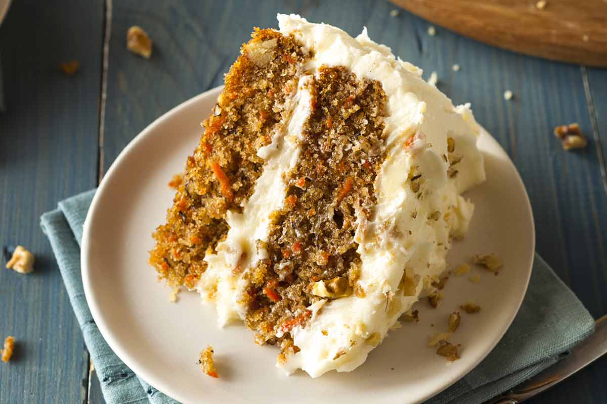

Carrot Cake

Description
Carrot cake is cake that contains carrots mixed into the batter. Most modern carrot cake recipes have a white cream cheese frosting. Sometimes, nuts such as walnuts or pecans are added into the cake batter, as well as spices such as cinnamon, ginger and ground mixed spice. They are popular in loaf, sheet cake and cupcake form, and (in the United Kingdom as well as North America) can be found pre-packaged at grocery stores, and fresh at bakeries.
Ingredients
For the cake:
- 2 cups all-purpose flour
- 2 teaspoons baking soda
- ½ teaspoon fine sea salt
- 1½ teaspoons ground cinnamon
- 1¼ cups canola or other vegetable oil
- 1 cup granulated sugar
- 1 cup lightly packed brown sugar
- 1 teaspoon vanilla extract
- 4 large eggs, at room temperature
- 3 cups grated peeled carrots (5 to 6 medium carrots)
- 1 cup coarsely chopped pecans
- ½ cup raisins
For the frosting:
- 8 ounces cream cheese, at room temperature
- 1¼ cups powdered sugar
- ⅓ cup heavy whipping cream
- ½ cup coarsely chopped pecans, for topping cake
Steps
- Preheat the oven to 350 degrees Fahrenheit (176C).
- Grease two 9-inch round cake pans, line the bottom with parchment paper and then grease the top. Or grease and flour the bottom and sides of both pans.
- Whisk flour, baking soda, salt, and cinnamon in a medium bowl until very well blended.
- In a separate bowl, whisk the oil, granulated sugar, brown sugar, and vanilla.
- Add the eggs, one at a time, whisking after each one.
- Switch to a large rubber spatula and scrape the sides and bottom of the bowl. Then, add the dry ingredients in three parts, gently stirring until they disappear and the batter is smooth.
- Stir in the carrots, nuts, and raisins.
- Divide the cake batter between the prepared cake pans.
- Bake until the tops of the cake layers are springy when touched and when a toothpick inserted into the center of the cake comes out clean, 35 to 45 minutes.
- Cool cakes in the pans for 15 minutes, then carefully turn the cake layers out onto cooling racks. Remove the parchment paper and cool completely. If you find that a cake layer is sticking to the bottom of the pan, leave the cake pan upside down and allow gravity to do its thing.
- In a large bowl, beat the cream cheese with a handheld mixer on medium speed until creamy, about 1 minute.
- Beat in the powdered sugar, ¼ cup at a time, until fluffy.
- Pour in the whipping cream. Beat on medium speed for 2 to 3 minutes, or until the frosting is whipped and creamy. This frosting resembles the texture of whipped cream. Chill covered until ready to frost the cake.
- When the cake layers are completely cool, frost the top of one cake layer, and place the second cake layer on top.
- Add the remaining frosting to the top of the carrot cake and use a butter knife or small spatula to swirl the frosting around. Leave the sides of the cake unfrosted. Finish with a handful of nuts on top.